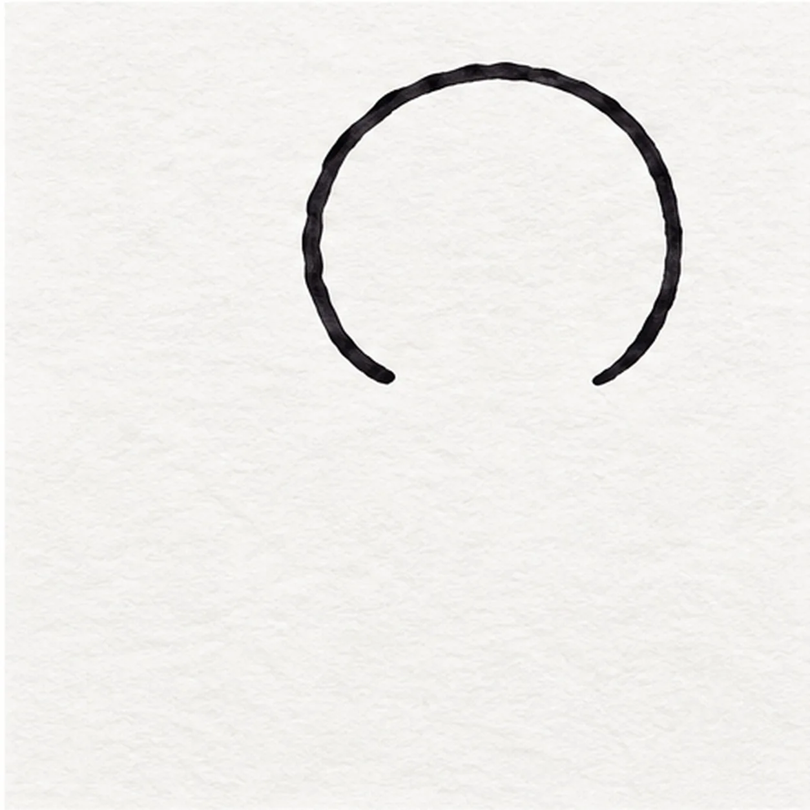
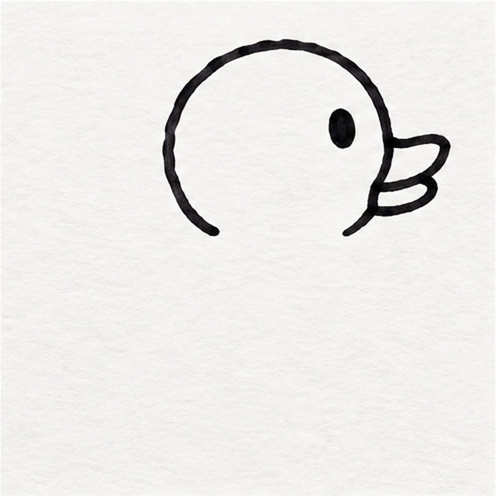
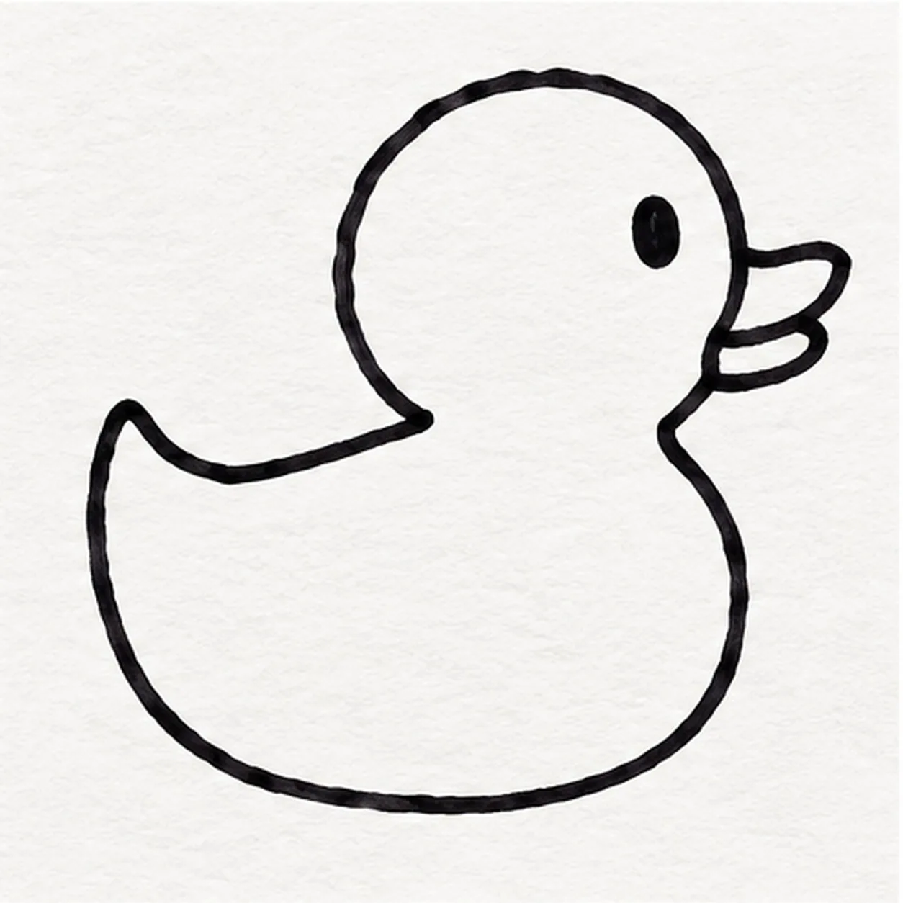
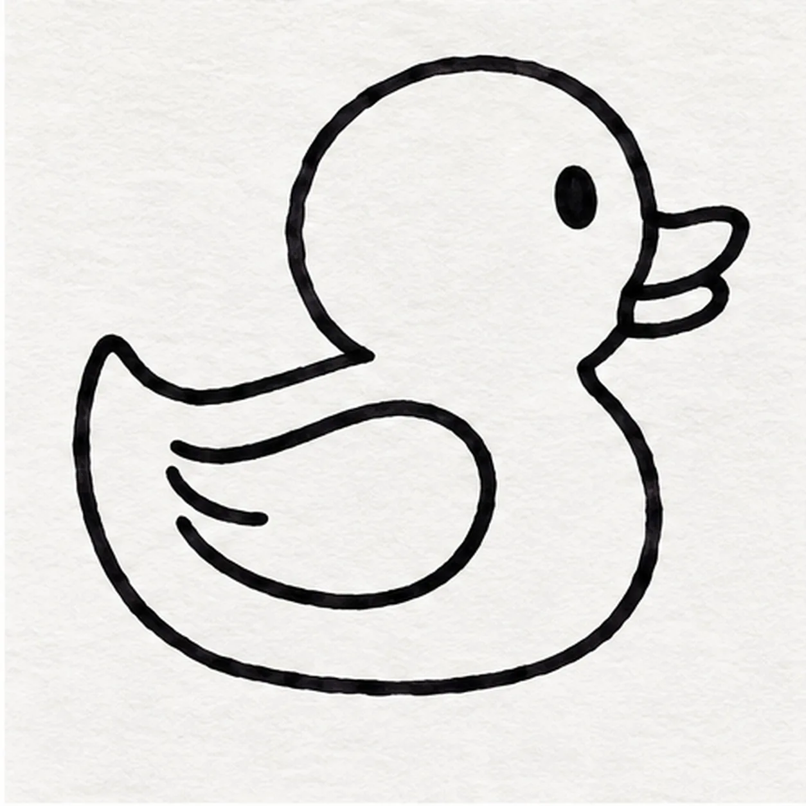
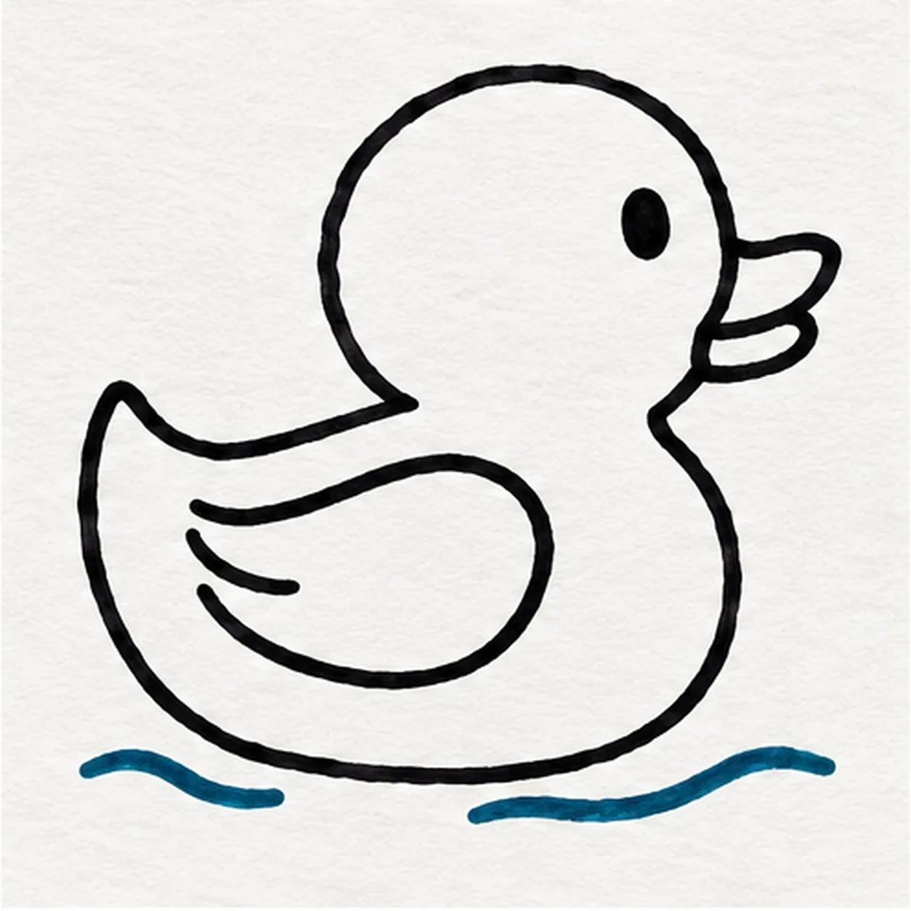

Felt-tip marker mode
Let's draw a rubber duck
Treat this as one playful practice round: sketch the idea loosely, simplify the shapes, then commit with confident marker outlines and bright fills.
-
01

Round the duck head
Draw a generous rounded head high on the right, leaving both lower ends open: the left end will meet the back and the right end will meet the chest.
Marker tip: Keep the head a little larger than the later wing and leave enough room on the right for the beak.
-
02

Set beak and eye
Attach a short two-lobed beak to the head’s right edge and place one small oval eye above and just behind it.
Marker tip: Let the two beak lobes share the same head edge; one eye keeps the expression simple.
-
03

Sweep the body and tail
From the head’s open lower-left edge, sweep a broad back curve toward an upturned tail point at left; return along a low belly curve to the head base.
Marker tip: Pull the back and belly in relaxed arcs, keeping the tail point small and the chest round.
-
04

Float the wing
Inside the body, draw one broad rounded wing that curves back toward the tail, then add one short curved feather stroke inside its rear half.
Marker tip: Leave clear yellow space between the wing outline and body edge so the two shapes read separately.
-
05

Set the bath ripples
Below the duck, make one short broken teal-marker ripple on the left and a longer broken teal-marker ripple on the right, leaving open water between them.
Marker tip: Use two loose teal strokes rather than a closed pool shape; the duck should still look like the main subject.
-
06

Color the duck
Fill the existing head, body, tail, and wing warm yellow with visible marker streaks; color the beak orange and preserve both teal ripples and small paper highlights.
Marker tip: Move the yellow marker with the round head and broad body; leave dry-paper streaks so the fill feels hand-drawn.